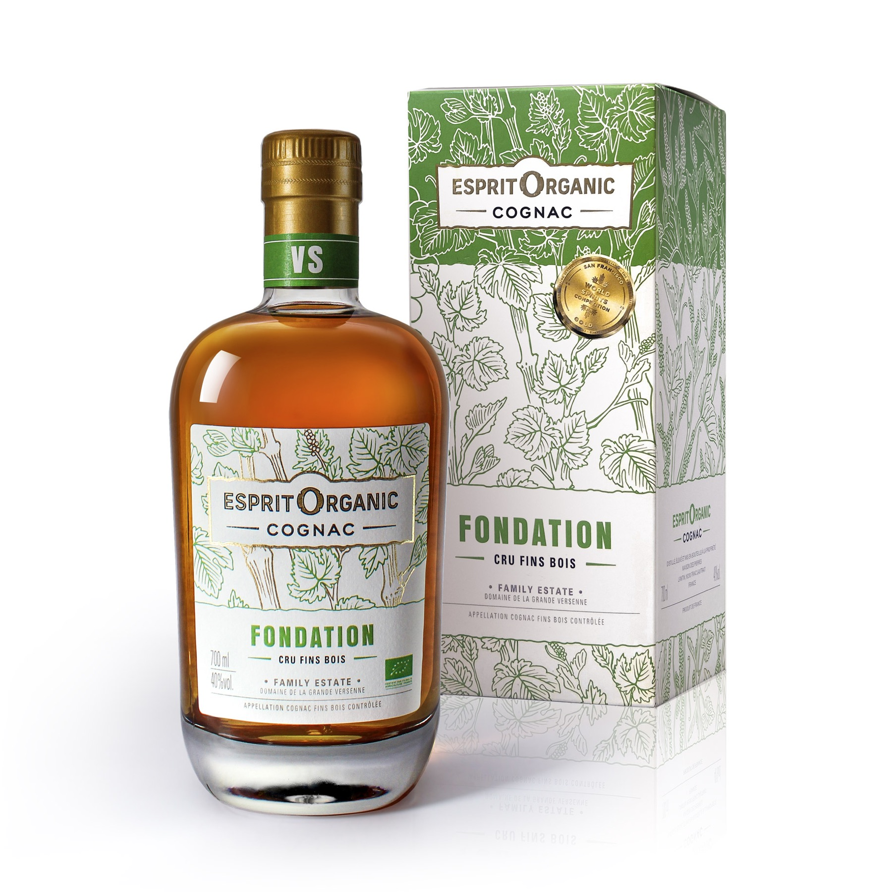

Cognac VS
Fondation VS
Finesse et fraîcheur
Un VS franc et lumineux, salué pour son éclat aromatique et sa lecture directe du fruit. Une entrée dans l'univers Esprit Organic, précise, vive et naturellement élégante.

San Francisco World Spirits Competition 2019